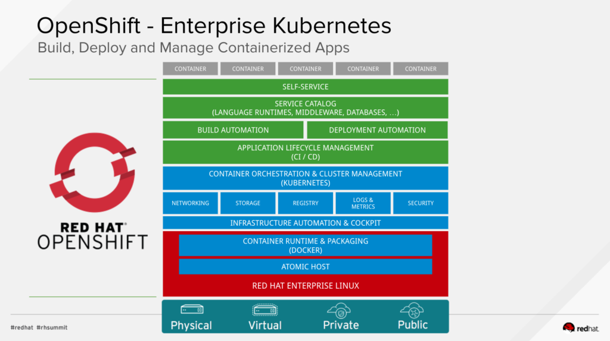

OpenShift 和 Kubernetes 有什么区别?
在 2019-05-03 Friday 发布于 DevOps 分类 • 2 min read
OpenShift 3以后, 架构完全基于K8S进行了重构, 但是又有一些差异. 今天, 我们就深入研究一下.
K8S 是"内核"¶
K8S可以认为是当代分布式系统的"内核". 我们意识到, 一个设计良好的作业调度程序, 跨多台及其运行, 能够协调托管在骑上的工作负载的状态, 自然就会促进写作, 就像Linux内核为单个主机上调度工作负载所做的那样. 遵循这一逻辑, 我们知道不同的产品会根据针对用户的不同而差异化地打造.
在很多手机, 电脑, 服务器, 甚至是树莓派上, 运行的都是相同的Linux 内核, 但是通过不同的不定来支持多种多样的硬件.
K8S和各种各样的K8S发行版也适用于同样的模型, 通过不同类型的补丁, 来支持在K8S上面的一层.
OpenShift 是发行版¶
这是一个强有力的区别。OpenShift就是Kubernetes的发行版，专注于开发人员的体验，而开发人员需要开发下一代云原生应用程序。
虽然任何人都可以通过选择每1个部分并按照每个用户选择的定制方式组装它们来从Scratch 构建Linux，但大多数人都没有。大多数用户选择的抽象级别意味着他们不会从管理（甚至了解）Util-Linux版本2.31和2.33之间的差异中获得很多价值。为了更进一步，用户关心最低级别的功能（例如，只要超过最小版本号，他们就知道哪些命令/ API可用），然后提供所提供功能的列表。
这与OpenShift非常相似。OpenShift将Kubernetes打包并包含其他工具作为OpenShift认为重要且OpenShift的用户需求的功能。就像CoreOS和CentOS包含不同的工具集一样，迎合不同的用户，因此Kubernetes发行版也是如此。
OpenShift和K8S的具体区别¶
OpenShift 架构概述¶
OpenShift容器平台是一系列流行的组件和服务的集合体, 构建于Red Hat Enterprise Linux, Docker, 和K8S之上. OpenShift针对开发人员, 增强了以下功能:
- 远程管理
- 多租户
- 安全性增强
- 应用生命周期管理
- 自服务接口

在上图中, 从下至上, 从左至右, 展示了经过Red Hat 在基本的容器架构基础上进一步集成、增强的架构:
- 基本OS是Red Hat Enterprise Linux (RHEL)
- Docker 提供了基本的容器管理API和容器镜像文件格式
- Kubernetes 管理运行容器的主机集群(实体的或虚拟的). 它通过资源(resources)来描述多容器应用是由多个资源组成的, 以及他们间如何交互
- Etcd 是一个分布式 key-value 存储, Kubernetes 通过它来存储集群内的关于容器和其他资源的配置和状态信息.
在Docker + Kubernetes 之上, OpenShift增加了容器平台所需要的其他功能. 具体包括:
- OpenShift-Kubernetes 扩展 是存储在Etcd中, 由Kubernetes管理的额外的资源类型(resource types). 这些额外的资源类型组成了OpenShift 内部状态和配置, 还有应用的资源.
- 容器化服务 充实了很多基础架构功能, 比如网络和认证. 这些功能有些是一直运行的, 有些是按需启动的.
- 运行时和xPaaS 是为开发者准备好的容器镜像, 每个都预配置了特定的语言运行时或数据库. 可以被用作镜像流(Image Stream)或在此基础上增加不同的框架, 库, 甚至是中间件来进行扩展. xPaaS 提供了一系列JBoss中间件产品的基础镜像, 如: JBoss EAP 和 ActiveMQ.
- DevOps 工具集和用户体验: OpenShift 为开发人员和系统管理员提供了一个Web UI和CLI 管理工具, 允许配置和监控应用和OpenShift的服务和资源. Web和 CLI 都是基于相同的REST API, 这个API也可以被外部工具(如: IDE和CI平台)整合. OpenShift也可以访问外部SCM库和容器镜像库.
备注:
OpenShift 团队:
- 帮助K8S 完成了Namespace 和 quota功能的开发;
- 推动了RBAC 授权认证的开发
- 帮助K8S运行更多类型的应用, 并为其开发了一些卷插件(Volume Plugin)
- 相比K8S, 多了Deployment Config(DC) resource. 使用该资源可以进行参数化部署, 执行滚动部署和回滚等.
- 相比K8S, 多了Route resource. 而Router也是K8S的Ingress功能的前身.
- 相比K8S, 默认集成了SDN (Open vSwitch)
- 相比K8S, 实现了开发运维一体化.
- 纳入CoreOS
- OpenShift 3.11, 集成了Prometheus和Grafana
- 相比K8S, 增强了管理物理节点的能力
- 目前, OpenShift还和NV合作, 未来会提供基于GPU运算能力的支持.
资源类型差异¶
Kubernetes 资源类型:
- Pods
- Services
- Replication Controllers
- Persistent Volume (PV)
- Persistent Volume Claims (PVC)
OpenShift 资源类型:
除了以上资源类型, OpenShift 还增加了以下主要的资源类型:
- Deployment Configurations (DC) - 用于 持续交付(CD)工作流
- Build Configurations (BC) - 用于 持续集成(CI) 工作流
- Routes - 基于HAProxy, 作用类似于K8S Ingress, 但早于Ingress.
OpenShift 特有的S2I 功能¶
OpenShift中的Source-to-Image (S2I) 进程会从SCM仓库中拉取代码, 自动化监测代码需要哪种类型的运行时, 并从特定运行时的基础镜像启动一个pod. 在这个pod 中, OpenShift 以开发人员相同的方式来构建该应用(如, 使用maven来构建java程序). 如果构建成功, 另一个镜像会被创建, 把应用二进制附加到运行时层之上, 并把这个新镜像推送到OpenShift的内部镜像仓库中. 接下来, 可以从这个新镜像创建一个pod来运行该应用. S2I 可以看做是一个嵌入到OpenShift平台中的 CI/CD pipeline.
CI/CD pipelines 会有很多种变异, 这个pipeline会暴露在这个项目(project, 就是K8S的namespace)中, 那么它就可以被调节来满足开发人员的需求. 例如, 外部CI工具(如Jenkins)可以用于来启动和运行测试, 然后给新镜像打上"成功"或"失败"的标签(label), 并推送到QA或生产环境. 随着时间推移, 一个组织一个部门一个公司可以创建他们自己的pipeline模板, 包括自定义的构建器和部署器.
总结¶
OpenShift 平台相比K8S, 具有以下特性:
- 自服务平台;
- 多语言, 多中间件, 数据库支持
- 高可用, 可伸缩性
- 也是开源的(Red Hat收取服务费)
- 安全 (基于: RBAC, LDAP, 主机, 网络, 容器各个层面的加固)
- 动态存储管理
- 企业级
- 日志整合/ 监控整合